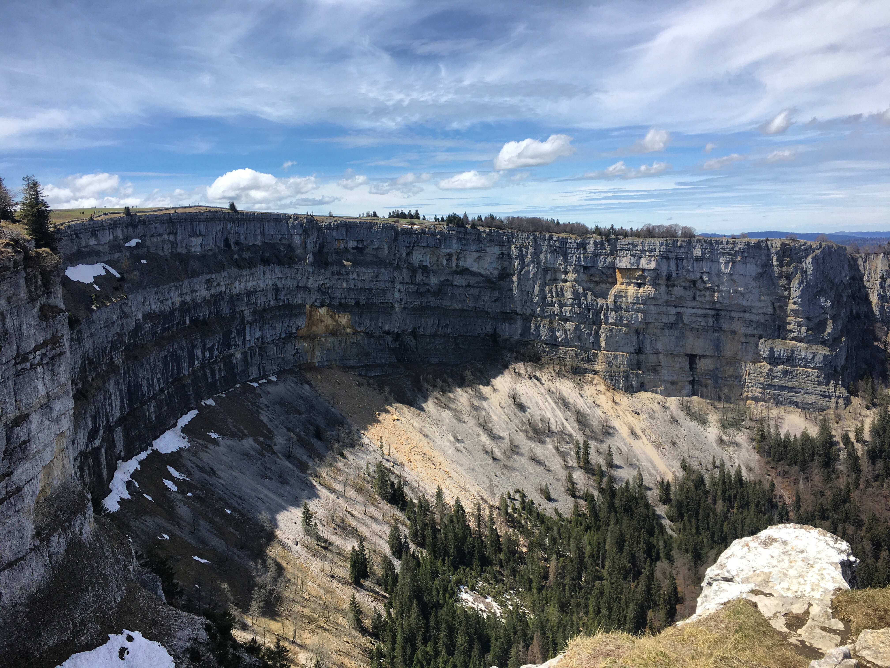

☰
RIEDHIKE
CREUX-DU-VAN, NEUCHÂTEL
08.05.2021
Difficulty: Medium
Distance: 14.2km
Duration: 4h35
Route:
Train to Noiraigue
Hike: Noiraigue - Creux-du-Van - Noiraigue

"Toblerones", concrete blocks built during the Second World War as tank barriers

Serpentine path with 14 turns


View on lake Bienne and Neuchâtel

The rock arena has forests and arctic-apline flora, an exceptional and unsual regional climate

An impressive natural rock arena with 160m high vertical rock faces surrounding a 4km long and
over 1km wide valley basin. First the glaciers, then the brooks have shaped the rock formation
from the 200 million year old lime deposits of
a prehistoric ocean.

Chamois, ibex and numerous other wild animals inhabit the pristine natural landscape